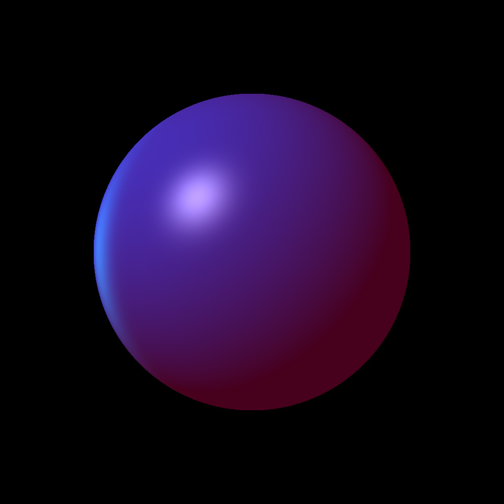
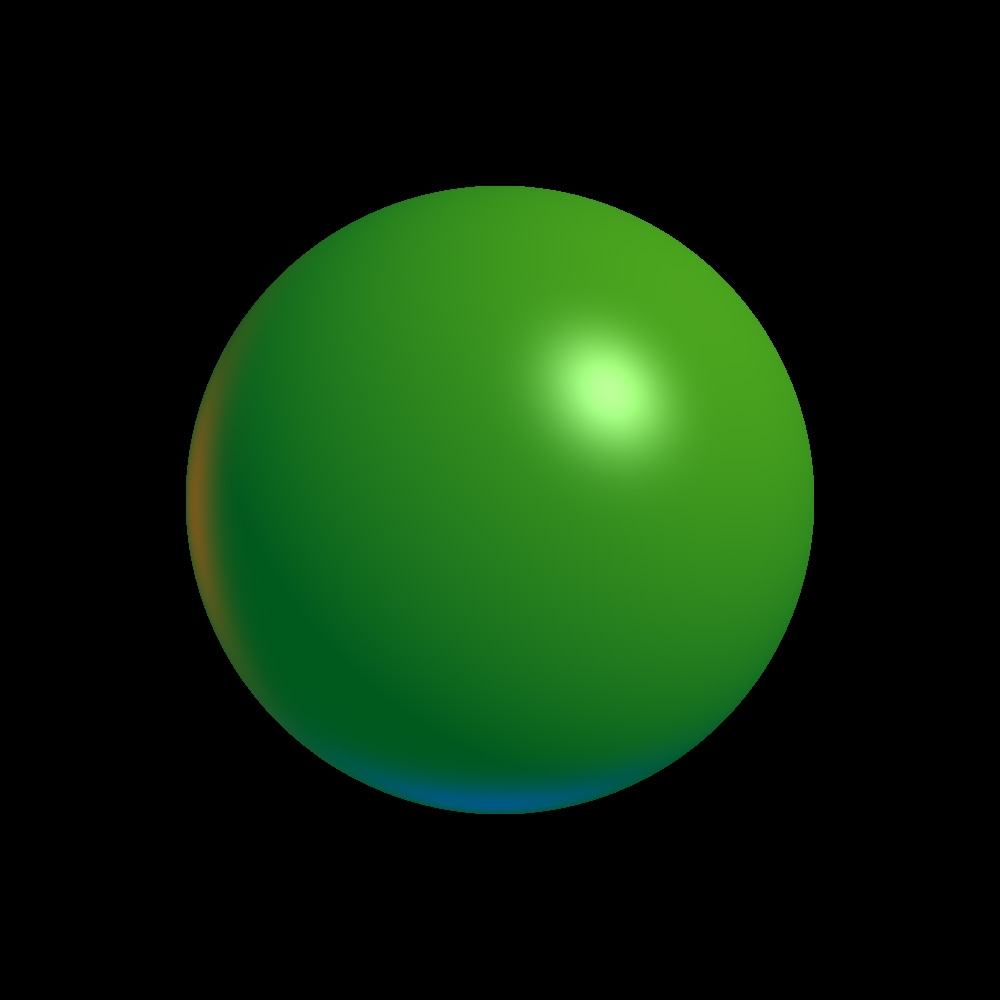
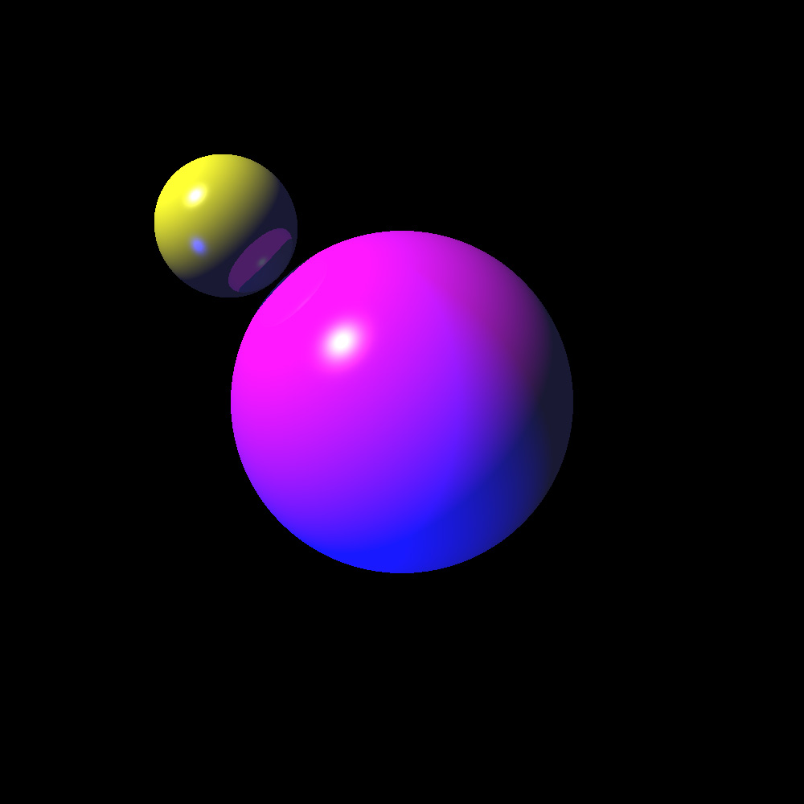
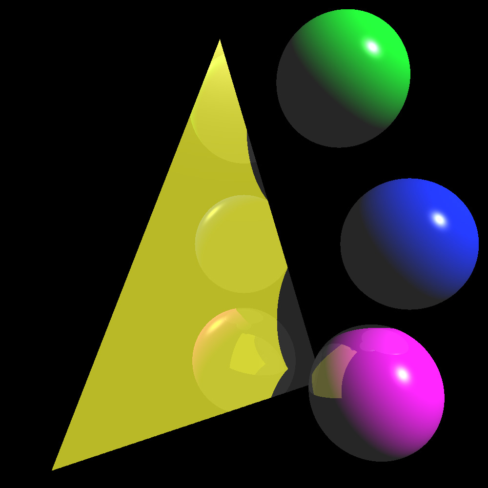
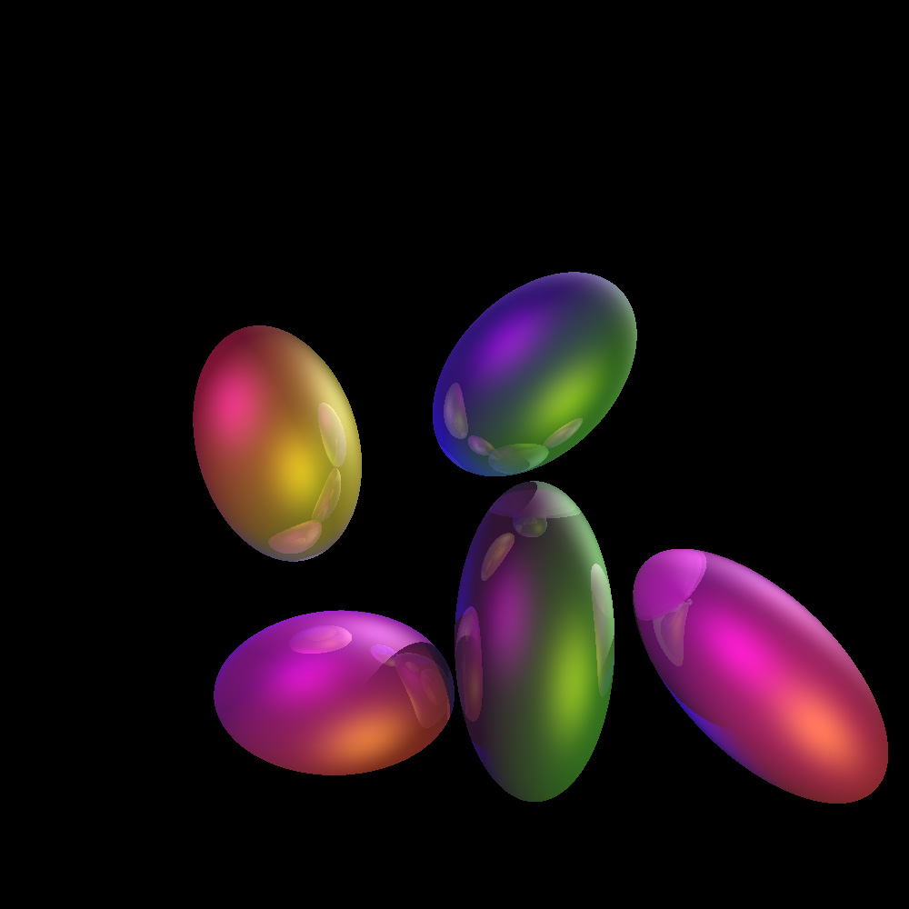
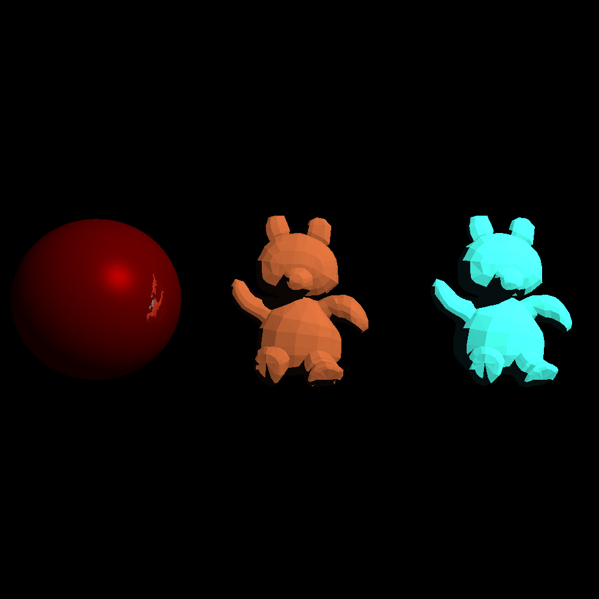

Ray Tracer
All images were produced by outputting to a .PNG file, then converting to .JPG format for the purposes of embedding on this page. Right-click and "Open image in new tab" to see the full-size 1000x1000 image.
Shading from multiple light sources
Time to run: 00:00:01

./as2 -f input-01 -d 1000 1000
More shading from multiple light sources
Time to run: 00:00:01

./as2 -f input-02 -d 1000 1000
Simple reflection with spheres
Time to run: 00:00:01

./as2 -f input-03 -d 1000 1000
Reflection with transformations and triangles
Time to run: 00:00:03

./as2 -f input-04 -d 1000 1000
Easter Eggs! Ellipsoids with reflections and pretty lights
Time to run: 00:00:04

./as2 -f input-05 -d 1000 1000
Reflection with red sphere and .obj files for 2 teddy bears
Time to run: 03:00:00

./as2 -f input-06 -d 1000 1000